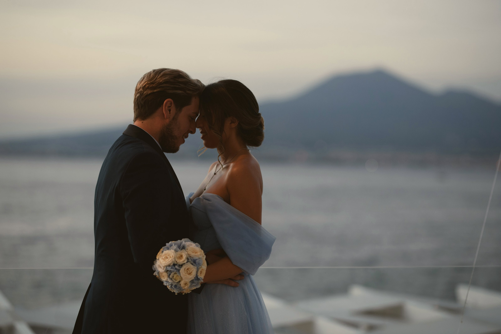

Long tables under late Italian light.


The planning stays with us.
Venues, permits, suppliers and the timings of the day, arranged in Italian and in person. You see the choices that matter and leave the rest to us.
Plan your weddingEight places, eight kinds of light.
1 of 3
Where do you see it?
Close your eyes for a moment.
Then choose your perfect setting.